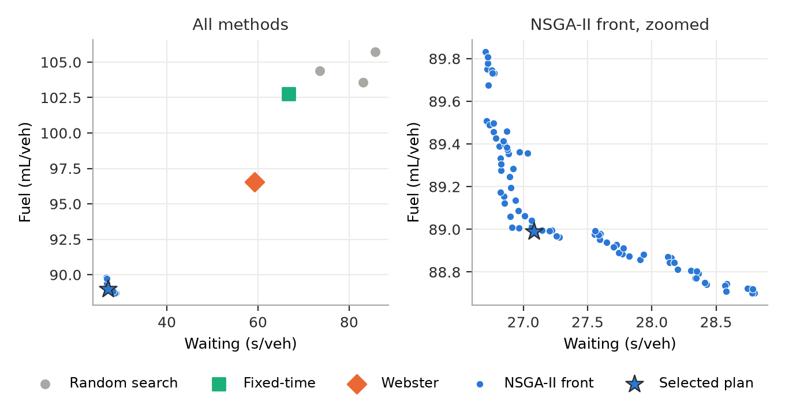
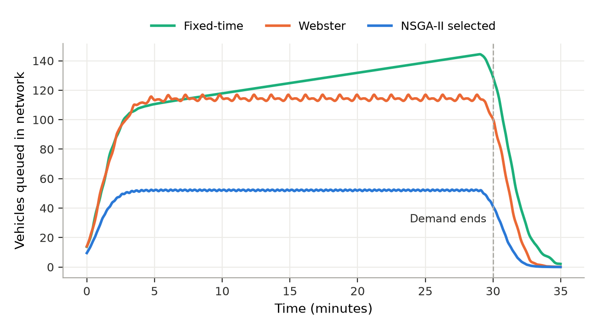

Smart City Traffic Signal Optimization Using Multi-Objective Genetic Algorithm — viva sheet
Code: traffic.py, nsga2.py, main.py, test_project.py in D:\files\stud\evo\traffic_signal_moga. Every number on this sheet comes from the actual run (results/RESULTS.md). Back: Interview Prep
1. 30-second pitch
2. Project at a glance
| Item | Value |
|---|---|
| Title | Smart City Traffic Signal Optimization Using Multi-Objective Genetic Algorithm |
| Objective | Minimize traffic congestion, vehicle waiting time, fuel consumption and pollution by optimizing traffic-signal timings |
| Network | 3 × 3 grid, junctions J1–J9, 36 approach links, unequal block lengths |
| Decision variables | 19 real genes: shared cycle + (green split, offset) × 9 junctions |
| Objectives | Congestion (veh), waiting (s/veh), fuel (mL/veh), NOx (g/veh), all minimised |
| Algorithm | NSGA-II from first principles: population 100, 300 generations, 30,100 evaluations per run |
| Runs | 11 seeds for NSGA-II, 11 for random search (control) |
| Baselines | Fixed-time (60 s, equal split) and Webster's method |
| Language / libraries | Python 3.12, NumPy, Matplotlib. No GA library |
| Runtime | About 17 minutes using 8 worker processes |
| Tests | test_project.py: 12 assert-based checks |
Pipeline
- Build the network: routing matrix, demand, link lengths (
traffic.py). - Random population of 100 signal plans.
- Decode each chromosome into cycle, greens and offsets.
- Simulate all plans together for 1800 s of demand + 300 s clearance.
- Score 4 objectives per plan.
- NSGA-II loop: rank, crowding, tournament, SBX, mutation, elitist survival. 300 generations.
- Pick one plan from the Pareto front: closest to the ideal point.
- Validate: compare with baselines on 30 random-traffic seeds and at 80 / 100 / 120 % demand.
3. Problem and why a multi-objective GA
- Signal timings decide how long vehicles stop. Bad timings mean long queues, repeated stopping, wasted fuel and more emissions.
- Classic methods such as Webster tune one junction at a time and target one goal (delay). A city needs network-wide timing and several goals.
- The goals conflict: shorter cycles reduce waiting but cause more stop-start driving, which costs fuel and NOx. So there is no single best plan, only trade-offs.
- The simulator is a black box: no formula or gradient links timings to objectives. A GA only needs to evaluate solutions, so it fits.
- A GA keeps a population, so one run can return a whole set of trade-off plans (the Pareto front).
4. Traffic signal terms
| Term | Meaning | In our project |
|---|---|---|
| Cycle length (C) | Time for the signal to go through all phases once | 40–120 s, one value shared by all 9 junctions. Selected: 43 s |
| Phase | A set of movements that get green together | 2 phases: north-south, then east-west |
| Green split | How the usable green is shared between phases | Gene sᵢ per junction |
| Lost time | Time in each cycle no one moves (amber, all-red, start-up) | 4 s after each phase, 8 s per cycle |
| Offset | Shift of a junction's cycle start relative to the others | Gene oᵢ per junction |
| Saturation flow (s) | Discharge rate of a queue on green | 0.5 veh/s = 1800 veh/h per approach |
| Flow ratio (y) | Arrival flow ÷ saturation flow | Y (sum over phases) is 0.64–0.78; J4 is critical at 0.775 |
| Capacity | s × green ÷ C | A shorter cycle wastes a bigger share on lost time |
| Platoon | A group of vehicles released together on green | Spreads out on the way (Robertson dispersion) |
| Green wave | Offsets set so a platoon meets green at each junction in turn | The main source of our gain |
| Fixed-time control | Timings repeat the same every cycle | Our output is a fixed-time plan |
5. GA basics in this project
| GA term | Meaning | Here |
|---|---|---|
| Chromosome | Encoded solution | 19 real numbers = one signal plan |
| Population | Solutions evolved together | 100 plans |
| Fitness | How good a solution is | 4 objective values from the simulator |
| Selection | Better ones become parents more often | Binary tournament on rank, then crowding distance |
| Crossover | Combine two parents | Simulated binary crossover (SBX) |
| Mutation | Small random change, keeps diversity | Polynomial mutation |
| Elitism | The best are never lost | Parents and children compete; best 100 survive |
| Termination | When to stop | Fixed budget: 300 generations |
- Exploration (new regions) comes mainly from mutation and the random start. Exploitation (refining good regions) comes from selection and crossover.
- Real-coded GA: genes are real numbers, not bits, because cycle, split and offset are continuous quantities.
6. Pareto dominance and the Pareto front
Why not add the objectives with weights?
- The units differ (veh, s/veh, mL/veh, g/veh), so any weights are arbitrary.
- One weighted run gives one plan. Seeing the trade-off would need a run per weight setting.
- A weighted sum cannot reach non-convex parts of the front.
Choosing the plan to deploy
Normalise each objective on the front to the range 0–1, then pick the plan with the smallest distance to the ideal point (0, 0, 0, 0). This gives a balanced compromise with no weights.
scaled = (F - F.min(0)) / np.ptp(F, axis=0) chosen = int(np.argmin(np.linalg.norm(scaled, axis=1)))
7. NSGA-II step by step
Non-dominated Sorting Genetic Algorithm II, Deb, Pratap, Agarwal and Meyarivan, 2002.
- Initialise 100 random plans and simulate them.
- Non-dominated sorting: rank 0 = Pareto front; remove it, the next front is rank 1, and so on.
- Crowding distance within each front.
- Binary tournament: two random plans; lower rank wins; on a tie, larger crowding distance wins.
- SBX + polynomial mutation create 100 children; simulate them.
- Merge parents and children (200), re-rank, keep the best 100 by rank then crowding. This is elitism.
- Repeat 300 times. Return rank 0.
Crowding distance
Sort the front by each objective; the two ends get infinity so extremes always survive; inner points get the normalised gap between their neighbours. A larger distance means a lonelier point, which is preferred, so the front stays spread out.
Why NSGA-II improved on NSGA
- Fast non-dominated sorting: O(M N²) instead of O(M N³).
- Elitism: parents compete with children.
- Crowding distance replaces the sharing parameter σ, so there is no niche radius to tune.
8. Hypervolume
- 4 objectives make exact computation awkward, so we estimate it by Monte Carlo: 100,000 fixed random points in the normalised box [0, 1.1]⁴. Hypervolume = share of points dominated by at least one front member.
- The box is normalised using the final fronts of all runs of both methods, so every number is on the same scale.
- Computed every 10 generations to draw the convergence curve.
def hypervolume(F, ideal, nadir, samples):
points = (F - ideal) / (nadir - ideal)
return float((points[None] <= samples[:, None]).all(2).any(1).mean())
9. Traffic model
| Parameter | Value |
|---|---|
| Block lengths | Rows 290 m and 410 m; columns 340 m and 470 m (deliberately unequal) |
| Free-flow speed | 54 km/h. Travel delays of 15, 18, 22 and 25 s |
| Saturation flow | 0.5 veh/s per approach |
| Turning | 80 % straight, 10 % left, 10 % right, no U-turns |
| Demand | Entry rates 0.13 / 0.11 / 0.21 / 0.17 veh/s for S / N / E / W-bound, each × a fixed random 0.85–1.15 (seed 42). About 1.91 veh/s, ≈ 3443 vehicles in 30 min |
| Simulation | 1800 s of demand + 300 s clearance, 1 s step |
Queue (store-and-forward) model
queue = queue + arrivals served = min(queue, saturation × green) # discharge only on green queue = queue − served
- Point queue: vehicles stack at the stop line with no length limit, so no spillback.
- Routing matrix R (36 × 36): R[a, b] = share of link a's outflow that enters link b. Rows sum to 1 inside the grid, less at the edge where vehicles leave.
- Robertson platoon dispersion (TRANSYT): released platoons spread out on the way. Delay = 0.8 × free-flow time T; smoothing factor F = 1 / (1 + 0.35 × 0.8 × T).
- Stop: an arriving vehicle counts as a stop if the signal is red or a queue already exists.
- Clearance: 300 s with no new demand, so a plan can't look good by leaving vehicles stuck at the end.
- Fluid vs Poisson: the search uses smooth average flows. With a seed, arrivals become Poisson random counts, used only for testing.
10. Chromosome and decoding
| Gene | Range | Decoded as |
|---|---|---|
| C | 40–120 s | Cycle, rounded to whole seconds, shared by all junctions |
| sᵢ | 0–1 | N-S green = sᵢ × (C − 8), clipped so each green ≥ 10 s; E-W green = the rest |
| oᵢ | 0–1 | Offset = oᵢ × C seconds |
|— N-S green —|— 4 s lost —|— E-W green —|— 4 s lost —| repeats every C seconds phase = (t + offset) mod C
Why one shared cycle? (the design story)
Our first version gave each junction its own green times, so each had its own cycle. Then the timing difference between neighbours drifts every cycle: offsets mean nothing and no green wave can form. That version could not even beat Webster. With one shared cycle, offsets stay fixed and coordination works. This is also standard practice for coordinated signals.
Why genes as fractions?
- The split and offset are fractions of the cycle, so a change in C keeps every plan valid.
- Decoding enforces the 10 s minimum green and the cycle limits, so every chromosome is feasible. No penalty function or repair is needed.
11. The four objectives
| Objective | Formula | Unit |
|---|---|---|
| Congestion | Mean over the 36 links of each link's peak queue | veh |
| Waiting time | W / N | s/veh |
| Fuel | 1000 × (0.00028 W + 0.012 S + 0.07 D) / N | mL/veh |
| Pollution (NOx) | (0.0008 W + 0.06 S + 0.4 D) / N | g/veh |
W = total queued vehicle-seconds, S = total stops, D = total vehicle-km, N = vehicles that entered.
| Rate | Idling | Per stop | Per km |
|---|---|---|---|
| Fuel | 0.00028 L/s (≈ 1 L/h) | 0.012 L | 0.07 L |
| NOx | 0.0008 g/s | 0.06 g | 0.4 g |
- Why NOx, not CO₂? CO₂ = 2.31 kg per litre of petrol, so it is just fuel × a constant and would duplicate the fuel objective. NOx is driven mostly by stops (acceleration), so it measures something different. CO₂ is still reported as a derived value.
- Why peak queue for congestion? Average queue is proportional to waiting time (Little's law), so it would duplicate waiting. Peak queue shows how close links come to overflowing.
- The fuel and NOx rates are assumed order-of-magnitude values, not calibrated to a real fleet. Compare percentages between plans, not absolute values.
12. SBX and polynomial mutation
Simulated binary crossover (SBX), η = 15
u = random(0, 1) β = (2u)^(1/(η+1)) if u ≤ 0.5 β = (1 / (2(1 − u)))^(1/(η+1)) otherwise child1 = 0.5 × ((1 + β) p1 + (1 − β) p2) child2 = 0.5 × ((1 − β) p1 + (1 + β) p2)
- Behaves like one-point crossover on bits, but for real numbers. Children land near the parents.
- Larger η keeps children closer to the parents. The two children's mean equals the parents' mean.
- A pair crosses with probability 0.9; within a pair, each gene crosses with probability 0.5.
Polynomial mutation, η = 20
δ = (2u)^(1/(η+1)) − 1 if u < 0.5 δ = 1 − (2(1 − u))^(1/(η+1)) otherwise x' = clip(x + δ × (high − low), low, high)
Each gene mutates with probability 1/19, so on average one gene per child changes. Small changes are much more likely than big ones. Clipping keeps every gene inside its bounds.
13. Experiment design and baselines
Baseline 1: fixed-time
60 s cycle, equal greens (26 s each), zero offsets. A typical default plan.
Baseline 2: Webster's method (1958)
- L = 8 s lost per cycle. y = critical arrival flow ÷ saturation flow for each phase; Y = yNS + yEW.
- J4 has the largest Y (0.775), so C₀ = 17 / (1 − 0.775) = 75.7 s, used as the common cycle. Offsets are zero, because Webster treats each junction alone.
Making the results trustworthy
| Step | Why |
|---|---|
| 11 independent seeds | A GA is random; one run proves little |
| Report the median run | Not the luckiest run |
| Random search, same 30,100 evaluations | Shows the GA operators matter, not just the number of tries |
| 30 Poisson traffic seeds | Test on traffic the optimiser never saw; checks for overfitting to smooth demand |
| Common random numbers | All plans get the same arrivals for each seed, so the comparison is fair |
| 80 / 100 / 120 % demand | Checks robustness when traffic changes |
| Ablation: offsets set to zero | Measures how much coordination contributes |
14. Results
Search quality
- Hypervolume (11 runs): NSGA-II 0.907 (sd 0.062), random search 0.032 (sd 0.033). Random search barely improves.
- The median NSGA-II run returned 100 non-dominated plans. Waiting ranges 26.7–28.8 s/veh and fuel 88.7–89.8 mL/veh across the front.
- All 11 runs settled on short cycles of 40–43 s.
Selected plan vs baselines (30 Poisson seeds, mean)
| Objective | Fixed-time | Webster | NSGA-II selected | vs Webster | vs Fixed |
|---|---|---|---|---|---|
| Congestion (veh) | 11.28 | 11.29 | 7.27 | −35.6 % | −35.6 % |
| Waiting (s/veh) | 76.04 | 64.02 | 44.33 | −30.8 % | −41.7 % |
| Fuel (mL/veh) | 105.58 | 98.87 | 94.42 | −4.5 % | −10.6 % |
| NOx (g/veh) | 0.520 | 0.494 | 0.484 | −2.1 % | −7.1 % |
Smooth demand (used in the search): waiting 66.77 / 59.30 / 27.08 s/veh for fixed / Webster / NSGA-II.
Selected plan
| Junction | J1 | J2 | J3 | J4 | J5 | J6 | J7 | J8 | J9 |
|---|---|---|---|---|---|---|---|---|---|
| N-S green (s) | 16 | 13 | 12 | 14 | 14 | 13 | 17 | 14 | 14 |
| E-W green (s) | 19 | 22 | 23 | 21 | 21 | 22 | 18 | 21 | 21 |
| Offset (s) | 23 | 43 | 20 | 5 | 28 | 4 | 28 | 5 | 26 |
Common cycle 43 s (= 35 s green + 8 s lost). East–west gets more green at every junction, matching the heavier arterial demand.
Key findings
- Coordination is the main gain. Setting the plan's offsets to zero raises waiting from 44.3 to 55.7 s/veh.
- Smooth demand is optimistic. Gain over Webster: 54.3 % on smooth demand, 30.8 % on random traffic. Green waves suffer when arrivals are irregular.
- Objectives form two groups on the front: congestion–waiting correlation +0.98, fuel–NOx +0.99, but waiting–fuel −0.84. The real conflict is "keep vehicles moving" vs "avoid stop-start driving".
- Fuel and NOx gain less: every plan drives the same distance, a large fixed part of both. Only idling and stops can change.
- Queues: fixed-time's network queue keeps growing during demand (it lacks capacity at the busiest junctions); Webster settles near 115 vehicles, our plan near 52.
| Waiting (s/veh) by demand level | Fixed-time | Webster | NSGA-II |
|---|---|---|---|
| 80 % | 55.1 | 55.4 | 29.0 |
| 100 % | 76.0 | 64.0 | 44.3 |
| 120 % | 127.3 | 87.8 | 119.9 |





15. Code walkthrough
| File | What it contains |
|---|---|
traffic.py | Constants; build_routing, build_feeders, build_demand, build_link_lengths; decode; simulate; fixed_plan, webster_plan |
nsga2.py | pareto_rank, crowding_distance, tournament, crossover (SBX), mutate (polynomial), nsga2, random_search |
main.py | 22 searches in parallel with multiprocessing.Pool, hypervolume, plan selection, Poisson and demand tests, 6 figures, results.json, RESULTS.md |
test_project.py | 12 assert checks |
MODEL.md, README.md | Model details and how to run |
Building the routing matrix
for row in range(ROWS):
for col in range(COLS):
for d in range(4): # approach direction
for h, (dr, dc) in enumerate(HEADINGS): # heading after the junction
is_turn = h // 2 != d // 2
if h != d and not is_turn:
continue # no U-turns
r, c = row + dr, col + dc
if 0 <= r < ROWS and 0 <= c < COLS: # still inside the grid
share = STRAIGHT if h == d else TURN
routing[link_id(row, col, d), link_id(r, c, h)] = share
- Directions 0, 1 are N-S and 2, 3 are E-W, so
h // 2 != d // 2means the vehicle changes axis: a turn. - If the next junction is outside the grid, nothing is written: those vehicles leave the network.
- Steady flow on each link is solved in one line:
np.linalg.solve(I − Rᵀ, demand). Webster uses it.
Decoding a whole population at once
def decode(x):
cycle = np.rint(x[:, :1]) # gene 0, kept 2-D for broadcasting
usable = cycle - 2 * LOST
green_ns = np.clip(np.rint(x[:, 1::2] * usable), GREEN_MIN, usable - GREEN_MIN)
green_ew = usable - green_ns
offset = np.rint(x[:, 2::2] * cycle)
return green_ns, green_ew, cycle, offset
xis (plans, 19).x[:, 1::2]= genes 1, 3, 5 … (splits).x[:, 2::2]= genes 2, 4, 6 … (offsets).x[:, :1]has shape (plans, 1), so it broadcasts against the 9 junctions.np.clipenforces the 10 s minimum green on both phases.
One simulated second (inside simulate)
phase = (t + offset) % cycle ns = phase < green_ns ew = (phase >= green_ns + LOST) & (phase < green_ns + LOST + green_ew) green = np.stack([ns, ns, ew, ew], axis=2).reshape(plans, LINKS) platoon += SMOOTHING * (in_transit[t % BUFFER] - platoon) # Robertson dispersion arrivals = platoon (+ external demand while t < 1800) stops = stops + (arrivals * (~green | (queue > 0))).sum(1) queue += arrivals served = np.minimum(queue, SATURATION * green) queue -= served leaving = (served[:, FEEDERS] * FEEDER_SHARES).sum(2) # = served @ ROUTING in_transit[(t + DELAY) % BUFFER, :, link_index] = leaving.T # arrive DELAY s later
- Vectorised: arrays are (plans × links), so all 100 plans are simulated together with no Python loop over plans. A generation takes a fraction of a second.
green: each junction's N-S flag is copied to its two N-S approaches, E-W to its two E-W approaches.in_transitis a ring buffer of 26 time slots: vehicles leaving now are stored in the slot fort + DELAY.FEEDERS: each link has at most 3 feeders (straight, left, right), so a gather-and-sum replaces a 36 × 36 matrix multiply. A test proves both are equal.- Objectives at the end:
congestion = peak.mean(1),waiting = wait / entered, and the fuel and NOx formulas.
Non-dominated sorting in one expression
def pareto_rank(F):
dominates = (F[:, None] <= F).all(2) & (F[:, None] < F).any(2)
dominated_by = dominates.sum(0)
rank = np.full(len(F), -1)
level = 0
while (rank < 0).any():
front = (dominated_by == 0) & (rank < 0)
rank[front] = level
dominated_by -= dominates[front].sum(0)
level += 1
return rank
F[:, None]is (N, 1, 4) against F (N, 4): broadcasting compares every pair.dominates[i, j]is True when i dominates j.dominated_by[j]counts who dominates j. Zero means j is on the current front. Removing that front lowers the counts of the points it dominated, exposing the next front.
SBX in NumPy
u = rng.random(a.shape) power = 1 / (ETA_CROSSOVER + 1) beta = np.where(u <= 0.5, (2 * u) ** power, (1 / (2 * (1 - u))) ** power) child1 = 0.5 * ((1 + beta) * a + (1 - beta) * b) child2 = 0.5 * ((1 - beta) * a + (1 + beta) * b) keep = (rng.random(len(a))[:, None] > CROSSOVER_RATE) | (rng.random(a.shape) > 0.5) return np.where(keep, a, child1), np.where(keep, b, child2)
Elitist survival
X = np.vstack([X, children]) F = np.vstack([F, evaluate(children)]) rank = pareto_rank(F) crowd = crowding_distance(F, rank) best = np.lexsort((-crowd, rank))[:pop_size]
np.lexsort sorts by the last key first: by rank, then by larger crowding distance (hence -crowd). The first 100 survive.
Testing on unseen traffic (main.py)
plans = np.vstack([fixed_plan(), webster_plan(), pick, no_offsets]) poisson = np.array([traffic.simulate(plans, seed=s) for s in range(30)])
All four plans are simulated together, so each seed gives them identical random arrivals.
16. Testing
Run python test_project.py. Plain assert statements, no test framework. All 12 pass.
| # | Check | What it proves |
|---|---|---|
| 1 | Pareto rank on a hand-worked 4-point example | Sorting is correct |
| 2 | Equal points share a front | No false domination on ties |
| 3 | Crowding: ends infinite, middle = 2.0 | Crowding formula is correct |
| 4 | SBX + mutation stay inside bounds | Operators never create invalid genes |
| 5 | Schaffer problem: f₁ = x², f₂ = (x − 2)² | NSGA-II finds the known Pareto set 0 ≤ x ≤ 2 |
| 6 | Routing rows sum to ≤ 1, interior = 1 | The model never creates vehicles |
| 7 | Feeder gather equals served @ ROUTING | The speed-up is exact |
| 8 | Cycle 58, split 0.4, offset 0.5 → 20 / 30 / 29 s | Decoding is correct |
| 9 | Split 0 → 10 s minimum green | Safety limit enforced |
| 10 | Near-zero demand → no congestion | No phantom queues |
| 11 | 120 % demand waits longer than 80 % | Model responds sensibly |
| 12 | Population run = plans run one by one | Vectorisation does not mix plans |
17. Report structure
| Chapter | Contents |
|---|---|
| 1. Introduction | Background, problem statement, objective, project description |
| 2. Requirements | Hardware, software, functional and non-functional requirements |
| 3. System design | Flow diagram, road network figure, queue model, chromosome, objective formulas |
| 4. Implementation | Modules, NSGA-II operator table, code for sorting and decoding, baselines, hypervolume, verification |
| 5. Results and discussion | Setup, convergence, Pareto front, correlations, baseline tables, figures, selected plan, demand sensitivity, discussion |
| 6. Summary and conclusion | What was built and what it achieved, with its limits |
| References | 9: Deb 2002 (NSGA-II), Deb & Agrawal 1995 (SBX), Zitzler & Thiele 1999 (hypervolume), Deb & Jain 2014 (NSGA-III), Webster 1958, Robertson 1969 (TRANSYT), Akçelik 1981, NumPy, Matplotlib |
18. Limitations and future work
Limitations
- Point queues: no spillback or gridlock
- Synthetic network and demand; demand constant over time
- Fixed turning shares
- Fuel and NOx rates assumed, not calibrated
- No pedestrian phases, buses or protected turns; 43 s may be short for wide crossings
- Fixed-time plan, not adaptive
- Worse than Webster at 120 % demand
Future work
- Optimise across several demand scenarios for robust plans
- Validate in SUMO (microscopic simulator) with real traffic counts
- Add spillback, time-varying demand and calibrated emissions
- Compare with NSGA-III
- Adaptive control that re-optimises from live detector data
19. Likely viva questions
Basics
Q1. What is your project about?
Q2. What is a genetic algorithm?
Q3. Why use a GA instead of a mathematical method?
Q4. What is a Pareto front?
Q5. Why not combine the four objectives with weights?
NSGA-II
Q6. Explain NSGA-II.
Q7. What is crowding distance?
Q8. How is elitism achieved?
Q9. What is hypervolume and how did you compute it?
Q10. Why compare against random search?
Q11. What are SBX and polynomial mutation?
Q12. What parameters did you use?
Q13. What would you use with more objectives?
Traffic model and design
Q14. What is in your chromosome?
Q15. What is an offset and why does it matter?
Q16. Why one shared cycle for all junctions?
Q17. How do you handle constraints such as minimum green?
Q18. How does your simulator work?
Q19. What is platoon dispersion?
Q20. How do you count a stop?
Q21. Why NOx and not CO₂ for pollution?
Q22. Why is congestion measured as peak queue?
Q23. Are your fuel and emission numbers real?
Results and evaluation
Q24. What is Webster's method?
Q25. What were your main results?
Q26. How did you pick one plan from the front?
Q27. How do you know the plan isn't overfitted?
Q28. Why only 2–4 % improvement in fuel and NOx?
Q29. Do the four objectives really conflict?
Q30. What is the weakness of your plan?
Q31. Why did you run 11 times?
Q32. Why did every run choose such a short cycle?
Implementation
Q33. How did you make it fast enough?
multiprocessing.Pool. The full experiment takes about 17 minutes.Q34. How did you test the code?
Q35. Are the results reproducible?
python main.py regenerates the same tables and figures.Q36. Could this work on a real city?
20. Numbers to remember
| Setup | Value |
|---|---|
| Junctions / links | 9 / 36 |
| Genes | 19 |
| Population × generations | 100 × 300 |
| Evaluations per run | 30,100 |
| Runs (each method) | 11 |
| Cycle range / min green | 40–120 s / 10 s |
| Lost time | 4 s × 2 |
| Saturation flow | 0.5 veh/s |
| Demand + clearance | 1800 + 300 s |
| SBX η / mutation η | 15 / 20 |
| Poisson seeds | 30 |
| Checks | 12 |
| Results | Value |
|---|---|
| Hypervolume GA / random | 0.907 / 0.032 |
| Selected cycle | 43 s |
| Webster cycle (J4, Y=0.775) | 75.7 s |
| Waiting: Webster → GA | 64.0 → 44.3 s/veh |
| Waiting vs Webster | −30.8 % |
| Congestion vs Webster | −35.6 % |
| Fuel / NOx vs Webster | −4.5 % / −2.1 % |
| Waiting vs fixed-time | −41.7 % |
| No offsets | 55.7 s/veh |
| Smooth vs random gain | 54.3 % vs 30.8 % |
| 120 % demand GA / Webster | 119.9 / 87.8 |
| Runtime | ≈ 17 min |